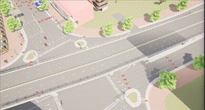

轨迹跟踪 Drive.py
本示例使用 Carla 模拟器来执行轨迹跟踪任务， Drive.py 主要功能包括连接CARLA服务器、设置模拟环境、生成车辆、读取和处理路径点数据、控制车辆运动、记录和保存模拟结果下面对于主要函数进行介绍。
基于 湖工商场景(WindowsNoEditor)，首先需要运行generate_traffic.py 。
定义CARLA设置
创建 Carla 的世界设置对象，并根据配置设置天气条件
#定义了一些全局变量用于控制模拟参数，如迭代次数、等待时间、总运行时间、天气条件等。
ITER_FOR_SIM_TIMESTEP = 10
WAIT_TIME_BEFORE_START = 5.00
TOTAL_RUN_TIME = 200.00
TOTAL_FRAME_BUFFER = 300
NUM_PEDESTRIANS = 0
NUM_VEHICLES = 2
SEED_PEDESTRIANS = 0
SEED_VEHICLES = 0
WEATHERID = {
"DEFAULT": 0,
"CLEARNOON": 1,
"CLOUDYNOON": 2,
...
}
SIMWEATHER = WEATHERID["CLEARNOON"]
def make_carla_settings():
settings = carla.WorldSettings(
synchronous_mode=True,
no_rendering_mode=False,
fixed_delta_seconds=0.02
)
weather = carla.WeatherParameters.ClearNoon
if SIMWEATHER == WEATHERID["CLEARNOON"]:
weather = carla.WeatherParameters.ClearNoon
elif SIMWEATHER == WEATHERID["CLOUDYNOON"]:
weather = carla.WeatherParameters.CloudyNoon
# Add other weather conditions as needed
return settings, weather
计时器
Timer为一个计时器类，用于测量时间间隔和计算每秒的tick数。
class Timer(object):
def __init__(self, period):
self.step = 0
self._lap_step = 0
self._lap_time = time.time()
self._period_for_lap = period
def tick(self):
self.step += 1
def has_exceeded_lap_period(self):
return self.elapsed_seconds_since_lap() >= self._period_for_lap
def lap(self):
self._lap_step = self.step
self._lap_time = time.time()
def ticks_per_second(self):
return float(self.step - self._lap_step) / self.elapsed_seconds_since_lap()
def elapsed_seconds_since_lap(self):
return time.time() - self._lap_time
获取车辆信息
获取车辆的当前位置和偏航角
def get_current_pose(vehicle):
transform = vehicle.get_transform()
x = transform.location.x
y = transform.location.y
yaw = math.radians(transform.rotation.yaw)
return (x, y, yaw)
发送控制命令给车辆，控制油门、刹车、方向盘等
def send_control_command(vehicle, throttle, steer, brake, hand_brake=False, reverse=False):
control = carla.VehicleControl()
steer = np.fmax(np.fmin(steer, 1.0), -1.0)
throttle = np.fmax(np.fmin(throttle, 1.0), 0)
brake = np.fmax(np.fmin(brake, 1.0), 0)
control.steer = steer
control.throttle = throttle
control.brake = brake
control.hand_brake = hand_brake
control.reverse = reverse
vehicle.apply_control(control)
将车辆的轨迹数据写入CSV文件
def write_trajectory_file(x_list, y_list, v_list, t_list, vehicle_id):
create_controller_output_dir(CONTROLLER_OUTPUT_FOLDER)
file_name = os.path.join(CONTROLLER_OUTPUT_FOLDER, f'Trajectory_{vehicle_id}.csv')
with open(file_name, 'w') as trajectory_file:
for i in range(len(x_list)):
trajectory_file.write('%0.3f, %0.3f, %0.3f, %0.3f\n' % (t_list[i], x_list[i], y_list[i], v_list[i]))
执行轨迹跟踪任务
执行轨迹跟踪任务，包括连接CARLA服务器、设置模拟环境、生成车辆等
def exec_waypoint_nav_demo(args):
client = carla.Client(args.host, args.port)
client.set_timeout(10.0)
world = client.get_world()
settings, weather = make_carla_settings()
world.apply_settings(settings)
world.set_weather(weather)
blueprint_library = world.get_blueprint_library()
vehicle_bp = blueprint_library.filter('vehicle.audi.tt')[0]
spawn_points = world.get_map().get_spawn_points()
vehicles = []
vehicle_1 = world.try_spawn_actor(vehicle_bp, spawn_points[216])
vehicle_2 = world.try_spawn_actor(vehicle_bp, spawn_points[11])
vehicles.append(vehicle_1)
vehicles.append(vehicle_2)
运行结果
